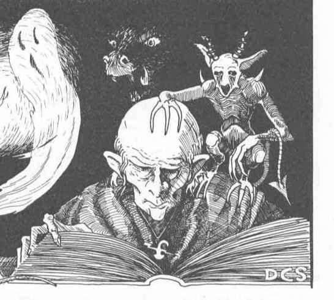

魔法师法术（六至九环）
| 编号 Number | 六环 6th Level | 七环 7th Level | 八环 8th Level | 九环 9th Level |
|---|---|---|---|---|
| 1 | 反魔法护罩 Anti-Magic Shell | 毕格比擒拿掌 Bigby's Grasping Hand | 嫌恶／关爱术 Antipathy/Sympathy | 星界投射 Astral Spell |
| 2 | 毕格比强袭掌 Bigby's Forceful Hand | 召唤恶魔 Cacodemon | 毕格比金刚拳 Bigby's Clenched Fist | 毕格比粉碎掌 Bigby's Crushing Hand |
| 3 | 控制天气 Control Weather | 魅惑植物 Charm Plants | 克隆术 Clone | 异界之门 Gate |
| 4 | 死亡术 Death Spell | 延迟爆裂火球 Delayed Blast Fireball | 钢化玻璃 Glassteel | 禁锢术 Imprisonment |
| 5 | 解离术 Disintegrate | 卓姆吉瞬间召唤 Drawmij's Instant Summons | 焚云术 Incendiary Cloud | 流星爆 Meteor Swarm |
| 6 | 物品附魔 Enchant an Item | 双重维度 Duo-Dimension | 群体魅惑 Mass Charm | 怪物召唤 VII Monster Summoning VII |
| 7 | 法术延展 III Extension III | 有限祈愿 Limited Wish | 迷宫术 Maze | 律令：死亡 Power Word, Kill |
| 8 | 指使术 Geas | 群体隐形 Mass Invisibility | 心灵屏障 Mind Blank | 虹光法球 Prismatic Sphere |
| 9 | 玻璃化术 Glassee | 怪物召唤 V Monster Summoning V | 怪物召唤 VI Monster Summoning VI | 形体变化 Shape Change |
| 10 | 法术无效结界 Globe of Invulnerability | 魔邓肯之剑 Mordenkainen's Sword | 欧提路克魔舞 Otto's Irresistible Dance | 时间静止 Temporal Stasis |
| 11 | 守卫与结界 Guards and Wards | 相位门 Phase Door | 恒久术 Permanency | 时间停止 Time Stop |
| 12 | 隐形追猎者 Invisible Stalker | 律令：震慑 Power Word, Stun | 任意物体变形术 Polymorph Any Object | 祈愿术 Wish |
| 13 | 传奇学识 Legend Lore | 重力反转 Reverse Gravity | 律令：目盲 Power Word, Blind | |
| 14 | 降水术 Lower Water | 拟像术 Simulacrum | 瑟腾法术免疫 Serten's Spell Immunity | |
| 15 | 怪物召唤 IV Monster Summoning IV | 雕像术 Statue | 徽记术 Symbol | |
| 16 | 移土术 Move Earth | 消失术 Vanish | 缚魂术 Trap the Soul | |
| 17 | 欧提路克冰封法球 Otiluke's Freezing Sphere | |||
| 18 | 分水术 Part Water | |||
| 19 | 投影术 Project Image | |||
| 20 | 转生术 Reincarnation | |||
| 21 | 斥力术 Repulsion | |||
| 22 | 灵体折磨 Spiritwrack | |||
| 23 | 化石为肉 Stone to Flesh | |||
| 24 | 谭森变形术 Tenser's Transformation |
